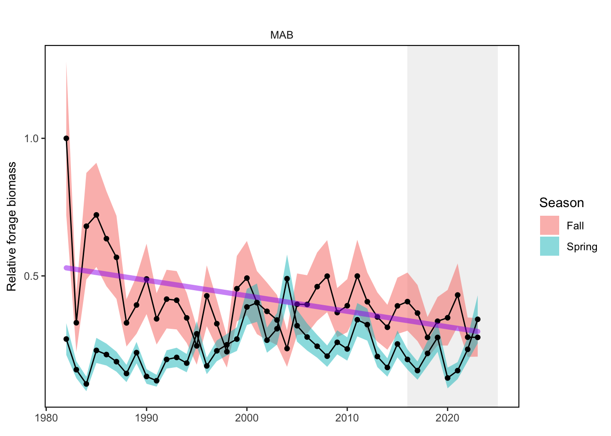
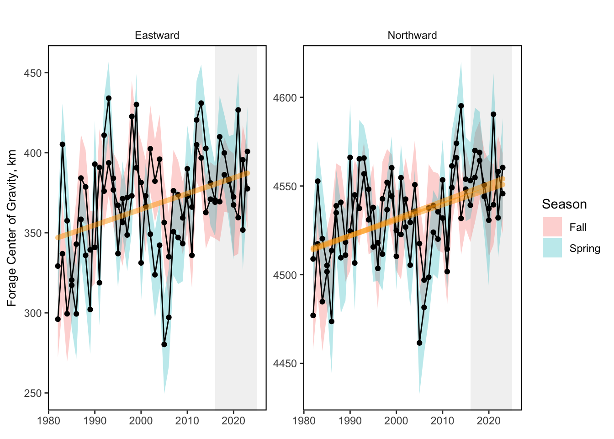
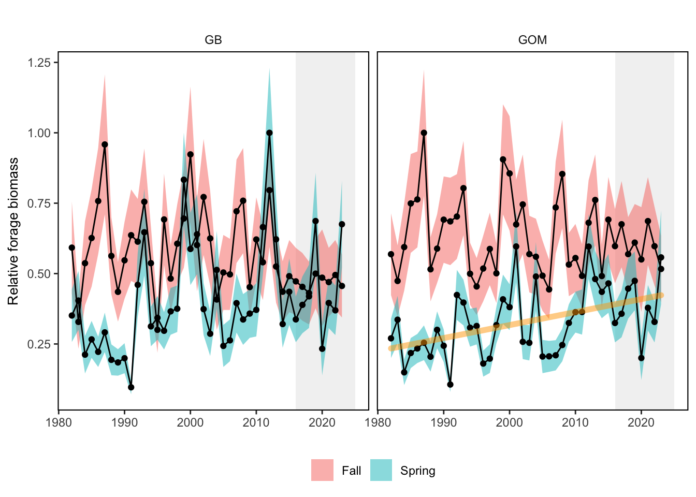

SMART Indicator Report: Forage Fish Index
2 Indicator name
Forage Fish Index
Includes variable(s): Fall Eastward Forage Fish Center of Gravity, Fall Eastward Forage Fish Center of Gravity SE, Fall Forage Fish Biomass Estimate, Fall Forage Fish Biomass Estimate SE, Fall Northward Forage Fish Center of Gravity, Fall Northward Forage Fish Center of Gravity SE, Spring Eastward Forage Fish Center of Gravity, Spring Eastward Forage Fish Center of Gravity SE, Spring Forage Fish Biomass Estimate, Spring Forage Fish Biomass Estimate SE, Spring Northward Forage Fish Center of Gravity, Spring Northward Forage Fish Center of Gravity SE
4 Indicator visualization
Variables plotted are Fall Forage Fish Biomass Estimate and Spring Forage Fish Biomass Estimate with error bands from Fall Forage Fish Biomass Estimate SE and Spring Forage Fish Biomass Estimate SE, respectively. Time series were extended back to 1982 and forward to 2023 in this update, but this did not change the trends reported previously for 1982-2022.

5 Indicator documentation
5.1 Are indicators available for others to use (data downloadable)?
## Yes5.1.1 Where can indicators be found?
## Data: https://noaa-edab.github.io/ecodata/index.html
## Description: https://noaa-edab.github.io/catalog/forage_index.html
## Technical documentation: https://noaa-edab.github.io/tech-doc/forage_index.html5.1.2 How often are they updated? Are future updates likely?
[need sequential look at datasets for update frequency. Future requires judgement]
5.1.3 Who is the contact?
Sarah Gaichas (Sarah.Gaichas@noaa.gov)
5.2 Gather indicator statistics
5.2.1 Units
Indicator | Units |
|---|---|
Fall Eastward Forage Fish Center of Gravity | km |
Fall Eastward Forage Fish Center of Gravity SE | km |
Fall Forage Fish Biomass Estimate | relative grams per stomach |
Fall Forage Fish Biomass Estimate SE | relative grams per stomach |
Fall Northward Forage Fish Center of Gravity | km |
Fall Northward Forage Fish Center of Gravity SE | km |
Spring Eastward Forage Fish Center of Gravity | km |
Spring Eastward Forage Fish Center of Gravity SE | km |
Spring Forage Fish Biomass Estimate | relative grams per stomach |
Spring Forage Fish Biomass Estimate SE | relative grams per stomach |
Spring Northward Forage Fish Center of Gravity | km |
Spring Northward Forage Fish Center of Gravity SE | km |
5.2.2 Length of time series, start and end date, periodicity
General overview: Spring (January-June), Fall (July-December)
Indicator specifics:
Indicator | EPU | StartYear | EndYear | NumYears | MissingYears |
|---|---|---|---|---|---|
Fall Eastward Forage Fish Center of Gravity | ALLEPU | 1982 | 2023 | 42 | 0 |
Fall Eastward Forage Fish Center of Gravity SE | ALLEPU | 1982 | 2023 | 42 | 0 |
Fall Forage Fish Biomass Estimate | AllEPU | 1982 | 2023 | 42 | 0 |
Fall Forage Fish Biomass Estimate | GB | 1982 | 2023 | 42 | 0 |
Fall Forage Fish Biomass Estimate | GOM | 1982 | 2023 | 42 | 0 |
Fall Forage Fish Biomass Estimate | MAB | 1982 | 2023 | 42 | 0 |
Fall Forage Fish Biomass Estimate SE | AllEPU | 1982 | 2023 | 42 | 0 |
Fall Forage Fish Biomass Estimate SE | GB | 1982 | 2023 | 42 | 0 |
Fall Forage Fish Biomass Estimate SE | GOM | 1982 | 2023 | 42 | 0 |
Fall Forage Fish Biomass Estimate SE | MAB | 1982 | 2023 | 42 | 0 |
Fall Northward Forage Fish Center of Gravity | ALLEPU | 1982 | 2023 | 42 | 0 |
Fall Northward Forage Fish Center of Gravity SE | ALLEPU | 1982 | 2023 | 42 | 0 |
Spring Eastward Forage Fish Center of Gravity | ALLEPU | 1982 | 2023 | 42 | 0 |
Spring Eastward Forage Fish Center of Gravity SE | ALLEPU | 1982 | 2023 | 42 | 0 |
Spring Forage Fish Biomass Estimate | AllEPU | 1982 | 2023 | 42 | 0 |
Spring Forage Fish Biomass Estimate | GB | 1982 | 2023 | 42 | 0 |
Spring Forage Fish Biomass Estimate | GOM | 1982 | 2023 | 42 | 0 |
Spring Forage Fish Biomass Estimate | MAB | 1982 | 2023 | 42 | 0 |
Spring Forage Fish Biomass Estimate SE | AllEPU | 1982 | 2023 | 42 | 0 |
Spring Forage Fish Biomass Estimate SE | GB | 1982 | 2023 | 42 | 0 |
Spring Forage Fish Biomass Estimate SE | GOM | 1982 | 2023 | 42 | 0 |
Spring Forage Fish Biomass Estimate SE | MAB | 1982 | 2023 | 42 | 0 |
Spring Northward Forage Fish Center of Gravity | ALLEPU | 1982 | 2023 | 42 | 0 |
Spring Northward Forage Fish Center of Gravity SE | ALLEPU | 1982 | 2023 | 42 | 0 |
5.2.3 Spatial location, scale and extent
General overview: by EPU and full shelf
Indicator specifics:
Indicator | EPU |
|---|---|
Fall Eastward Forage Fish Center of Gravity | ALLEPU |
Fall Eastward Forage Fish Center of Gravity SE | ALLEPU |
Fall Forage Fish Biomass Estimate | AllEPU |
Fall Forage Fish Biomass Estimate | GB |
Fall Forage Fish Biomass Estimate | GOM |
Fall Forage Fish Biomass Estimate | MAB |
Fall Forage Fish Biomass Estimate SE | AllEPU |
Fall Forage Fish Biomass Estimate SE | GB |
Fall Forage Fish Biomass Estimate SE | GOM |
Fall Forage Fish Biomass Estimate SE | MAB |
Fall Northward Forage Fish Center of Gravity | ALLEPU |
Fall Northward Forage Fish Center of Gravity SE | ALLEPU |
Spring Eastward Forage Fish Center of Gravity | ALLEPU |
Spring Eastward Forage Fish Center of Gravity SE | ALLEPU |
Spring Forage Fish Biomass Estimate | AllEPU |
Spring Forage Fish Biomass Estimate | GB |
Spring Forage Fish Biomass Estimate | GOM |
Spring Forage Fish Biomass Estimate | MAB |
Spring Forage Fish Biomass Estimate SE | AllEPU |
Spring Forage Fish Biomass Estimate SE | GB |
Spring Forage Fish Biomass Estimate SE | GOM |
Spring Forage Fish Biomass Estimate SE | MAB |
Spring Northward Forage Fish Center of Gravity | ALLEPU |
Spring Northward Forage Fish Center of Gravity SE | ALLEPU |
5.3 Are methods clearly documented to obtain source data and calculate indicators?
## Yes5.3.1 Can the indicator be calculated from current documentation?
[Build link to Tech-doc, look for current and previous methods]
5.4 Are indicator underlying source data linked or easy to find?
[Build link to Tech-doc, look for source, may require judgements]
5.4.1 Where are source data stored?
[Build link to Tech-doc, look for source, may require judgement]
6 Indicator analysis/testing or history of use
6.1 What decision or advice processes are the indicators currently used in?
The amount of forage fish available in the ecosystem combined with the energy content of the forage species determines the amount of energy potentially available to predators in the ecosystem. Changes in the forage base could pose a risk to managed and protected species production. Spatially explicit indices of abundance for several forage species were estimated using spatio-temporal modeling (VAST, [10]; [11]). This spatially-explicit forage index estimated the combined biomass of 21 forage species using stomach contents information from 22 predatory fish species collected on bottom trawl surveys. In addition to an index of forage abundance in each EPU, the coastwide center of gravity for the combined forage biomass was estimated. Consistent movement of the center of gravity towards the north or east indicates a distribution shift for combined forage fish.
6.2 What implications of the indicators are currently listed?
The resulting indices for the Mid-Atlantic show a long term decrease in fall and overall higher forage fish in fall relative to spring, with highest forage biomass during fall in the early-1980s. In New England, the forage index shows an overall higher forage fish biomass in fall relative to spring. There is a long-term increasing trend in the spring in GOM. Changes in the distribution of forage biomass also affects predator distribution. Since 1982, the fall center of gravity of forage fish has moved to the north and east. The spring forage center of gravity shows higher variability than fall, and a significant trend to the north.
6.3 Do target, limit, or threshold values already exist for the indicator?
[Fill by hand; if not in key results or implications, likely does not exist]
6.4 Have the indicators been tested to ensure they respond proportionally to a change in the underlying process?
[Fill by hand; if not in introduction, key results, or implications, likely not tested]
7 Comments
[Fill below by hand once above data complete]
7.1 Additional potential links to management in addition to uses listed above
7.2 What additional work would be needed for the Council to use the indicator?
7.3 What issues are caused if there is a gap or delay in data underlying the indicator